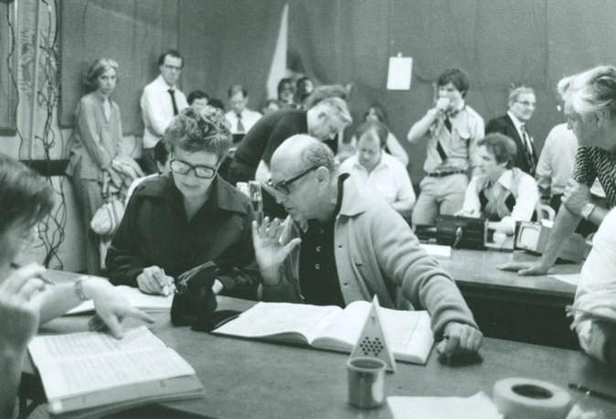
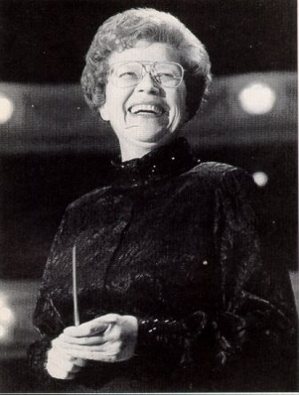
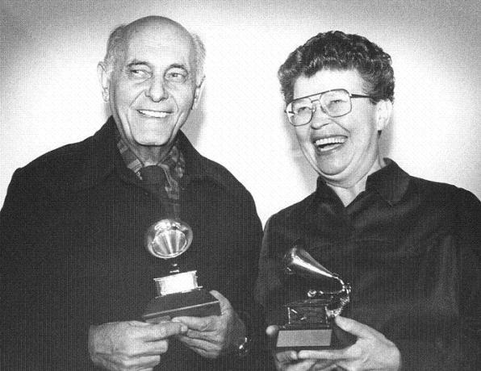

"You are successful that moment you are aware a choice made impact." – Benjamin Wechsler
Articles
Knowledge Through Awareness & Creativity
The Impact of a Great Leader
Benjamin Wechsler | Leadership Development, Learning, Social Media
Sir Georg Solti and Margaret Hillis listen to Fidelio playbacks. Credit: http://csoarchives.wordpress.com
Every day each of us is a catalyst for change! What that change looks like will depend largely on how we are honoring our unique qualities. Standing in our integrity and accountability will enhance our efforts and impact everything around us. It is at this exact moment that we begin to understand what our gifts are all about.
When I was a graduate student at the School of Music at Indiana University at Bloomington, I had an assistantship as Student Opera House Manager of the Musical Arts Center. One of my duties every Saturday was to be sure that the lobby was clear of any people so that we could prepare the house for the evening’s opera performance.
The Musical Arts Center, School of Music, Indiana University at Bloomington. Credit: http://newsinfo.iu.edu
On one particular Saturday afternoon, I began my duties preparing the house for that evening’s gala performance of La Traviata. I made my way through the catacombs of the house up to the lobby and stopped dead in my tracks. Margaret Hillis, conductor of the Chicago Symphony Chorus – the Margaret Hillis, one of my musical heroes – was sitting in the lobby, peacefully gazing out the scenic glass walls studying the Calder statue in front of the center. I was faced with the duty of evicting one of the greatest choral directors in the world!
I thought I was going to die.
I swallowed heavily, then quietly approached the maestro, and timidly introduced myself.
“Ms. Hillis, my name is Ben Wechsler."
Margaret Hillis at Orchestra Hall. Credit: http://www.bruceduffie.com/hillis4.html
“Good morning, Ben. I know very well who you are!”
I was stunned. Noticing the expression on my face, she smiled. “I’ve known you since you were this high!” She held her hand about 4 feet above the ground.
“Er…what? Really?”
“Yes! Your father taught horn at the Park Forest Conservatory of Music. You and your mother would always be there to pick him up to take him home.” She continued to explain how she was also on faculty there and made it a point to tell me how my father was a respected hornist and teacher, and how warm and humorous a person he was. She paused, and then compassionately told me that when he passed away it was a deep loss for the conservatory and his students. I heard more about his musicianship, his charming gentle manner, his joie de vivre. In the space of ten minutes I learned about the man I called Daddy, yet never knew past the age of nine.
She paused a few seconds. “I know I am not supposed to be here, but I needed a quiet space between rehearsals. I’ll leave you now to get your work done preparing for tonight’s opera.”
She left me in silence as I stood there in a swirl of emotions, admiring the maestro as she entered the lobby elevator, the doors closing behind like the final curtain of Parsifal.
In that fleeting moment, Margaret Hillis put aside her own greatness to tell me, lead me, share with me a part of my own greatness. Even though my responsibilities encroached on her need to be in a place of solitude, Ms. Hillis maintained her integrity while choosing to lift me up to a higher awareness of myself. She chose to be a catalyst of change for me. Then she was accountable to what was necessary for both of us, returning to our duties. The impact of her gift was immeasurable. Perhaps it was a gift for herself as well.
Sir Georg Solti and Margaret Hillis showing their Grammy Awards. Credit csoarchives.wordpress.com
Margaret Hillis’ legacy is measurable by the many fine recordings available to the public; the many Grammy awards she earned attest to her artistry. We have in her a model for impactful leadership as demonstrated on that one Saturday afternoon. Her greatness lives on with an elegant poignancy as I now pass it to you.
The choice is ours. We might choose, as leaders, to use others to justify our own greatness. Those we interact with become objects for self justification, which is self deceiving. Our resulting impact becomes short lived and forgetful, leaving only regret.
We can choose to be great by showing others their greatness. We do this by honoring our gifts, our uniqueness, with integrity and accountability, and leading others to see their gifts and uniqueness. We then have impact in the world that is long lasting and memorable.
Our legacy is measured by the impact of our greatness moment by moment.